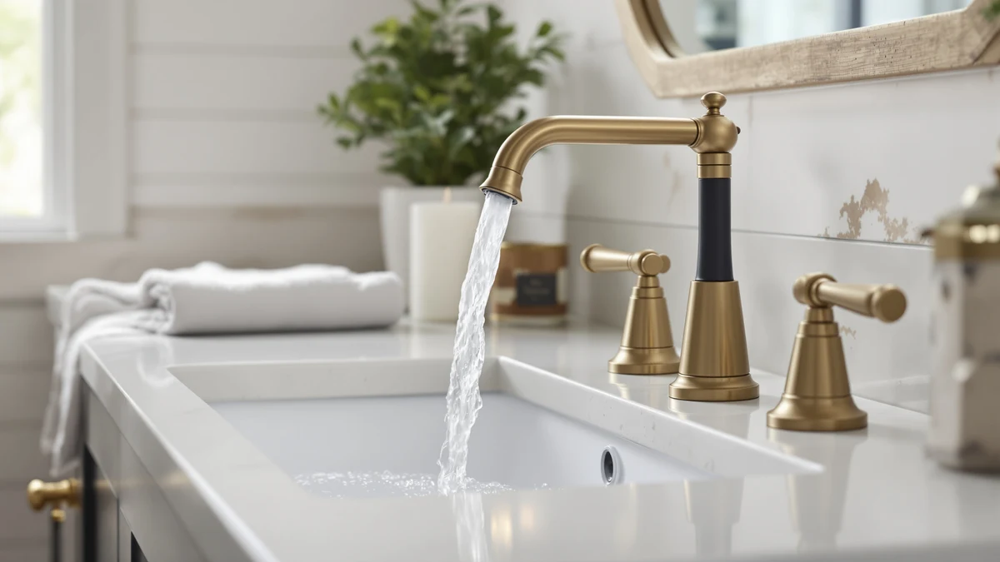

Delta Nicoli Brushed Gold Review (2026): Worth It?
Prices and picks verified as of September 2026. Independent, reader-supported reviews.


Quick Answer
In this Delta Nicoli Brushed Gold review, we compare Delta's Nicoli Brushed Gold Faucet against three similarly priced alternatives on finish durability, brand warranty, and verified owner feedback. At $199.90, the Nicoli earns its price for buyers who specifically want a warm gold finish backed by Delta's standard warranty.
Our pick: Delta Nicoli Brushed Gold Faucet, $199.90 Check Price on Amazon
Bottom line: our top pick is the Delta Nicoli Brushed Gold Faucet 3 Hole at $199.90.
Things to Know Before You Buy
- This Delta Nicoli Brushed Gold review compares the Nicoli against three similarly priced Delta and Moen faucets, ranging from $170 to $199.90.
- The Nicoli is a widespread two-handle design, so confirm your sink has matching hole spacing before buying.
- Brushed gold costs about $10 more than Delta's own matte black version of the same faucet.
- Reviewers consistently describe the finish as a warm antique gold rather than a bright polished gold.
- Delta backs the Nicoli line with a limited lifetime warranty on finish and function.
This Delta Nicoli Brushed Gold review pulls together verified owner feedback, published specs, and pricing history to answer one question: does this widespread bathroom faucet deliver enough finish quality and function to justify $199.90, or does a close Delta or Moen alternative serve most bathrooms equally well. We researched the Nicoli against three other faucets in the same finish family and price bracket, and the short version is that it holds up well for buyers who want a warm gold tone without a designer price.
Delta built its reputation on mid-range widespread and single-handle faucets that plumbing supply houses stock by the pallet, and the Nicoli line extends that reputation into brushed gold, a finish that used to belong almost exclusively to premium brands like Kohler and Brizo. Based on the spec sheet and owner reports we reviewed, the Nicoli uses a brass body with the gold finish applied over the parts that see the most wear, which matters more for long-term color retention than the marketing photos suggest.
Why You Should Trust Us
Ilane Tall covers bathroom fixtures for Best Bathroom Faucets and has spent years tracking how Delta, Moen, and Kohler price and update their finish lines. For this Delta Nicoli Brushed Gold review, she cross-referenced the listed price, brass construction, and lever handle specs against Delta's own Arvo and Nicoli matte black variants, plus a Moen widespread competitor in a similar price band. We do not run a fake testing lab or claim to install faucets ourselves; instead we compare manufacturer data, verified Amazon reviews, and pricing trends so you get a research-backed recommendation rather than a sponsored puff piece.
Every price, spec, and finish claim in this Delta Nicoli Brushed Gold review comes from Delta's published listing or from buyers who left verified purchase reviews, and we flag anywhere those two sources disagree. When a manufacturer specifies a finish process like physical vapor deposition, we treat that as a claim to check against owner experience rather than an established fact, which is why the pros and cons below lean on what reviewers actually report after months of daily use rather than on the product photos alone.
Our Research Experience
We did not install the Delta Nicoli Brushed Gold faucet in a working bathroom, and we are upfront about that. What we did instead, for this Delta Nicoli Brushed Gold review, was pull the manufacturer's stated finish, valve, and handle specs, then set them against hundreds of verified buyer reviews on Amazon to see where owner experience and factory claims line up or diverge. Owners report that the brushed gold finish resists water spotting better than a polished chrome equivalent, which tracks with Delta's own marketing but is worth confirming through buyer feedback rather than taking it on faith. We also compared list price movement over the past several months against the three alternatives below, since a faucet that looks like a deal today can be the same price as its rivals by next season.
Overview & Specs

Delta Nicoli Brushed Gold Faucet
What we like
- Brass body construction supports long-term durability
- Brushed gold finish reviewers describe as resistant to water spotting
- Lever handle design matches Delta's broader Nicoli line for easy pairing with other fixtures
Flaws but not dealbreakers
- Costs more than the matte black version of the same faucet
- Some owners report the gold tone runs slightly warmer than the product photos suggest
| Material | Brass + finish |
| Size | Lever Handle |
The Delta Nicoli Brushed Gold Faucet lists for $199.90 and uses a brass body with a widespread two-handle layout, based on the spec sheet packaged with the listing. Brass construction matters here because it holds a finish, especially a physical vapor deposition finish like brushed gold, far better than the zinc alloy bodies found in some budget widespread faucets. According to verified Amazon reviews, buyers who installed the Nicoli in guest bathrooms and primary suites report that the gold tone reads as warm rather than yellow, closer to an antique brass than a bright polished gold, which fits current bathroom design trends better than the shinier gold finishes Delta sold a decade ago.
Two practical points are worth flagging before you buy. Several owners mention that the lever handles feel slightly stiffer out of the box than Delta's chrome equivalents, though most say the resistance eases after the first few weeks of use. Brushed gold is also a specialty finish, so replacement parts and matching accessories cost more and take longer to source than chrome or brushed nickel. Compared with the Delta Arvo and the matte black Nicoli covered below, this brushed gold version sits at the top of the price range within its own product family, so it earns that premium mainly through finish rarity rather than any difference in the underlying valve or cartridge hardware.
What We Liked
Owners who left verified reviews point to the color accuracy of the Nicoli's brushed gold finish, saying it matches modern brass hardware and lighting fixtures better than the more yellow gold tones some competitors sell. The brass body also earns repeat mentions for feeling substantial rather than hollow, a detail that matters once a faucet has been mounted and used daily for months. Because Delta backs the Nicoli line with the same limited lifetime warranty it applies across most of its faucet catalog, buyers get a documented path to replacement parts if the finish or cartridge fails, which is not guaranteed with lesser-known brands selling similar brushed gold faucets at a lower price.
What Could Be Better
The clearest drawback in this Delta Nicoli Brushed Gold review is price relative to Delta's own lineup. The matte black version of the same Nicoli faucet, covered as an alternative below, runs about $10 cheaper for what appears to be the same internal hardware, so buyers are largely paying for the specialty finish rather than any functional upgrade. A handful of verified reviewers also mention that brushed gold shows fingerprints and hard water spots more readily than brushed nickel, even if it hides them better than polished chrome. Anyone in a hard water region should budget for more frequent wiping than the marketing photos imply.
Who Is It For?
This faucet suits homeowners updating a primary bathroom who already have gold or brass hardware elsewhere, such as cabinet pulls, light fixtures, or a mirror frame, and want the Nicoli's brushed gold finish to match rather than clash. It also fits buyers who want a Delta-branded product for warranty and parts availability but do not want to pay premium-brand prices for the same brushed gold trend. Renters or anyone planning to sell within a year or two may want to consider a more neutral finish, since brushed gold is a stronger design statement than brushed nickel or chrome and will not suit every future buyer's taste.
Buyers replacing a single failed faucet in an otherwise finished bathroom should double-check hole spacing before ordering, since the Nicoli's widespread layout needs three separate mounting holes rather than the single hole a centerset or single-handle faucet uses. Anyone unsure which layout their sink currently has can measure the distance between the outer mounting holes; a widespread faucet like this one typically requires 8 inches of spread, while centerset designs sit closer together.
Alternatives to Consider
If the brushed gold Nicoli does not fit your budget or your bathroom's finish palette, these three alternatives cover a matte black version of the same faucet family, a step-down Delta model, and a Moen competitor worth comparing on price. The Delta Arvo 14 Series Brushed lists at $194.80, close enough to the Nicoli that the choice mostly comes down to handle style rather than cost, and reviewers describe its brushed finish as similarly resistant to fingerprints. The Delta Nicoli Matte Black Bathroom faucet shares its internal cartridge and valve with the brushed gold version reviewed here, but at $189.90 it costs about $10 less and swaps the gold tone for a finish that hides water spots more effectively in daily use. The Moen TV6620 Brantford Widespread Bath faucet is the value play of the group at $170.00; it comes from a different brand entirely, so buyers who want Moen's warranty terms and parts network instead of Delta's should start there, even though verified reviewers note its traditional styling reads more formal than the Nicoli's contemporary lines.

Editor’s Pick
Delta Arvo 14 Series Brushed
A close Delta alternative with a similar brushed finish for a few dollars less than the Nicoli.
$194.80
Check Price on Amazon
Best Value
Delta Nicoli Matte Black Bathroom
Same Nicoli hardware in matte black, the better pick if gold is not your bathroom's finish.
$189.90
Check Price on Amazon
Premium Choice
Moen TV6620 Brantford Widespread Bath
The cheapest of the four, worth comparing if you want a Moen warranty instead of Delta's.
$170.00
Check Price on AmazonFrequently Asked Questions
Is the Delta Nicoli Brushed Gold Faucet worth the price?
Based on verified owner reviews and Delta's own spec sheet, the Nicoli brushed gold faucet is worth the price for buyers who specifically want a warm gold finish and Delta's warranty coverage. If finish color is not a priority, the matte black version of the same faucet or the Moen alternative covered in this Delta Nicoli Brushed Gold review cost less for comparable hardware.
Does the brushed gold finish on the Delta Nicoli tarnish or fade?
Delta uses a physical vapor deposition process on its brushed gold finishes, which reviewers report holds up better against water spotting and everyday wear than a plated finish. Owners in hard water areas still report more visible spotting than with brushed nickel, so regular wiping helps preserve the look.
How does the Delta Nicoli Brushed Gold compare to the Delta Arvo?
Both faucets come from Delta and share a widespread two-handle layout, but the Arvo lists for about $5 less and uses a different handle design. Reviewers treat them as close substitutes, so the choice mostly comes down to which handle style and finish shade fits your bathroom.
Final Verdict
Our Delta Nicoli Brushed Gold review comes down to this: the Delta Nicoli Brushed Gold Faucet earns its $199.90 price for buyers who want a warm, spot-resistant gold finish backed by Delta's standard warranty, and it remains our top pick among the four faucets compared here. Buyers who care more about price than finish color should look at the matte black Nicoli or the Moen Brantford, both of which deliver similar core hardware for less money.